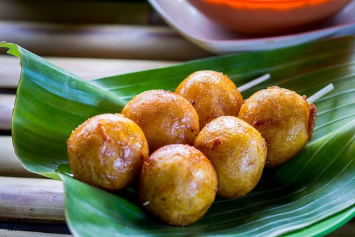

Tabog-Tabog (Bicol)
Description
Tabog-Tabog Bicolano version of buchi, a snack similar to mochi, but filled with sweet potato.
History
The name is derived from Spanish cóascarn ("eggshell") due to its common spherical shape and crunchy exterior.It is known by numerous other names, depending on the region, including carioca and tinudok. It is also known as bitsu-bitsu
Suggested Retail Price
Buy tabog-tabog for 10php per stick
Ingredients
- 1 cup sweet rice flour (glutinous rice flour can be used as a substitute)
- 1 cup sweetened shredded coconut
- 3/4 cup coconut milk
- 2 cups cooking oil
Coating:
- 1/4 cup brown sugar
- 1/2 cup coconut milk
Procedure
- In a mixing bowl, combine sweet rice flour, sweetened shredded coconut, and coconut milk. Mix well until a dough is formed.
- Scoop about a tablespoon and a half of the mixture then form into a ball shaped figure. Set aside.
- Heat a cooking pot then pour-in cooking oil.
- Deep fry the mixture that were formed into balls in medium heat for 5 to7 minutes or until the color turns light to medium brown.
- Turn off heat and remove the balls from the cooking pot. Transfer the balls to a plate lined with paper towel. Set aside.
- Start making the coating by heating a saucepan and pouring the coconut milk in. Let the coconut milk boil then add the brown sugar and stir continuously until the mixture thickens. Turn off heat.
- Dip the fried balls into the coating then skewer, if desired.
- Serve. Share and enjoy!